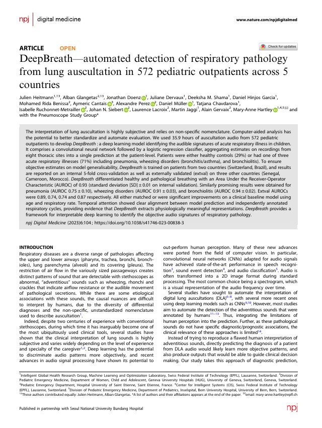
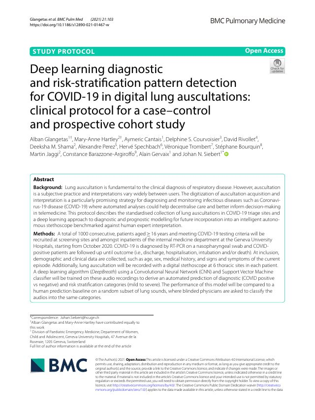
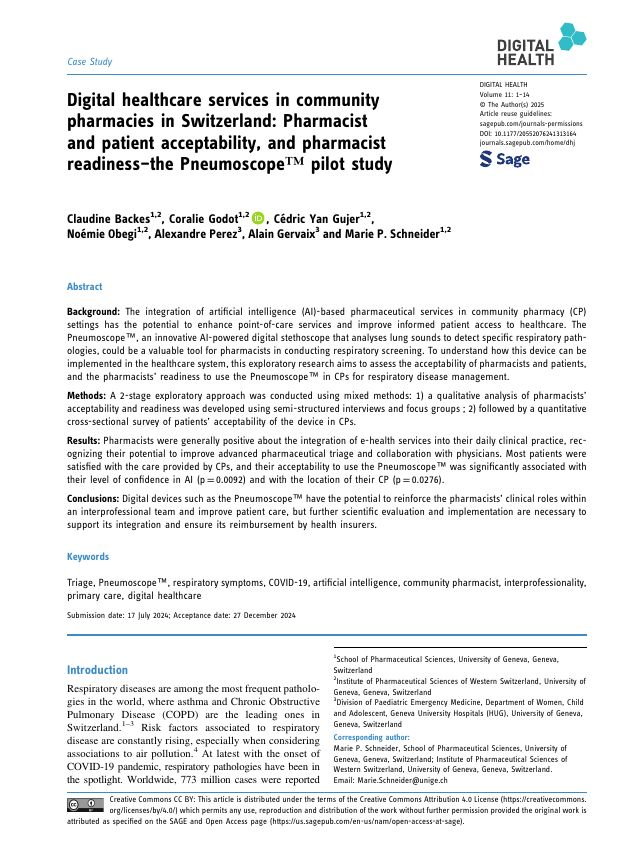
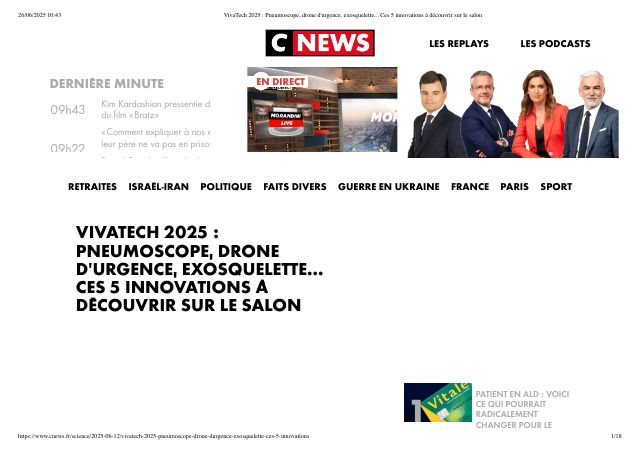
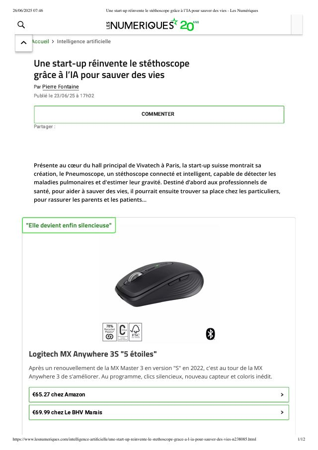
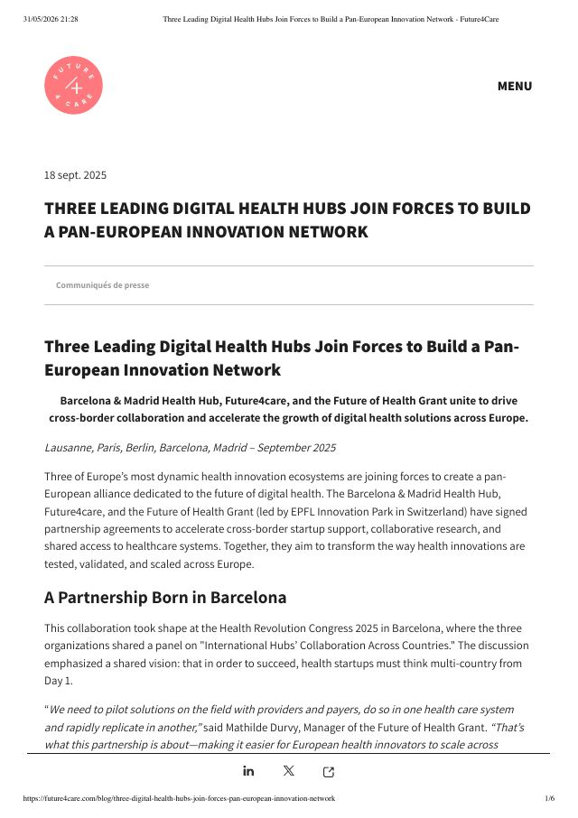
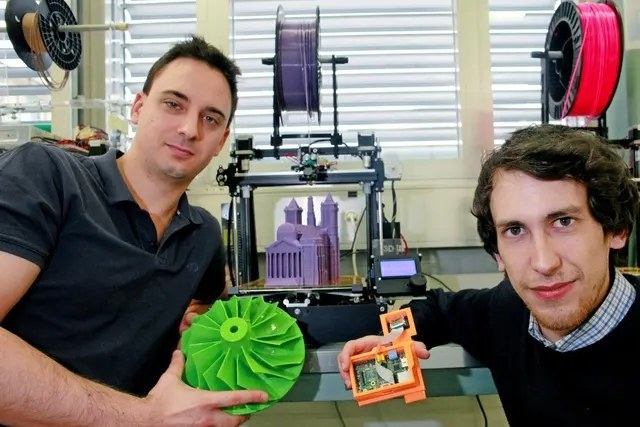
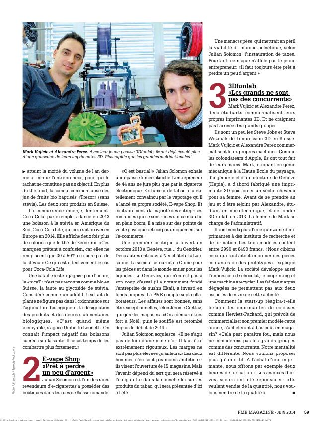
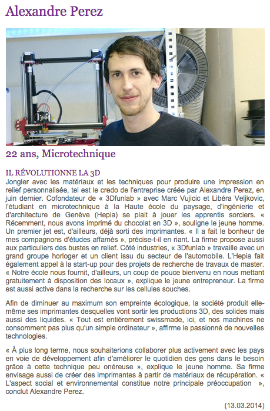

Recognition
Press, publications & patent
The evidence behind the project — a granted European patent, peer-reviewed science, and coverage in the technology and innovation press. Every item links to the original document.
Patent
EP4346569B1 — device & method for the simultaneous measurement of patient parameters
Named inventor on the patent protecting the design and method at the heart of the Pneumoscope project I led. View it on Google Patents, or read the filing PDF below.
Scientific publications

DeepBreath — automated detection of respiratory pathology from lung auscultation
Detection across 572 pediatric outpatients in 5 countries — the AI validation behind the Pneumoscope.
Read paper
Deep-learning pattern detection for COVID-19 in digital lung auscultations
Clinical protocol for a case–control and prospective cohort study using digital auscultation.
Read paper
Digital healthcare services in community pharmacies in Switzerland
Pharmacist and patient acceptability and readiness — the Pneumoscope pilot study.
Read paperPress coverage

VivaTech 2025 : Pneumoscope, drone d'urgence, exosquelette… 5 innovations à découvrir
The Pneumoscope featured among the five innovations to discover at VivaTech 2025.
Read article
Une start-up réinvente le stéthoscope grâce à l'IA pour sauver des vies
French tech press on the Pneumoscope and the promise of AI-assisted auscultation.
Read article
Three leading digital-health hubs join forces to build a pan-European innovation network
Coverage of the European digital-health ecosystem the Pneumoscope is part of.
Read article
Deux étudiants genevois se lancent dans l'imprimante 3D
Early press on 3Dfunlab, the 3D-printing startup co-founded during my studies.
Read article
3Dfunlab — « Les grands ne sont pas des concurrents »
PME Magazine on 3Dfunlab's vision and its own-built 3D printers.
Read article (PDF)
Alexandre J.E Perez — « Il révolutionne la 3D »
Student-magazine profile on the maker behind 3Dfunlab.
Read articleInnovation award — Innovation By Design, 2019
In 2019, the project won the Innovation By Design award in Renens, Switzerland — early recognition of the Pneumoscope's potential.
Watch the moment in the film, and read the coverage in 24 heures.